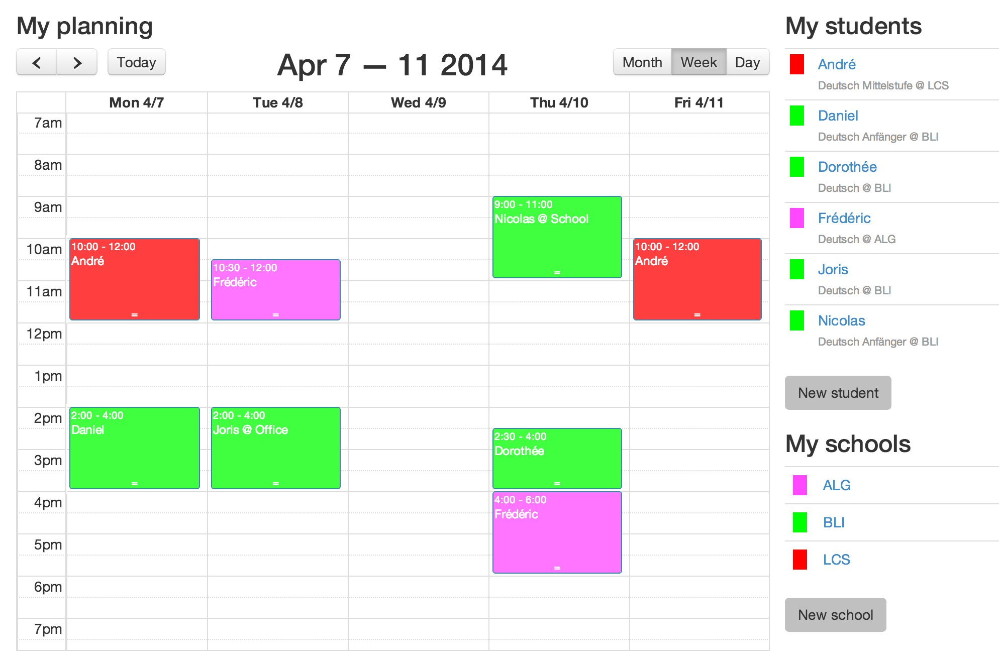

iTeach is a tool that aims to help independent teachers to organise their lessons for the their schools and students. Monthly generation of invoices will also help them manage their business.
In order to use iTeach, you can register at https://iteach.nemerosa.net or install your own instance in your infrastructure.
Those pages will help you work with iTeach. For any information about the internals of the iTeach application itself, you can go to its GitHub page.
